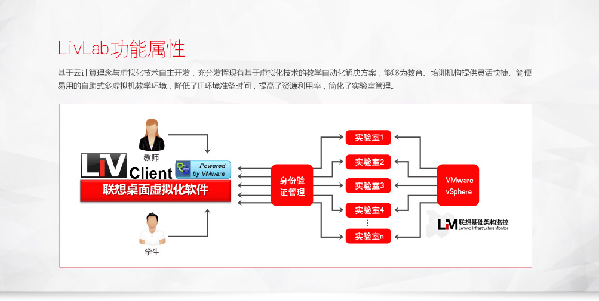

LivLab的优势
LivLab的客户收益
外延性教学手段
当前教学手段基本以课堂上的45分钟为主，学生即便有意愿进行温习，其上机环境及配套教学软件也是件非常复杂重新布置。通过LivLab平台，可以让学生在任何地点、任何时间，只要能上网就可以接入机房的信息中心，享受到7×24小时上机实验，进行能力提升的操作
智能化教学手段
目前学校课程设置较为单一，一般是以年级设置课程，每次上课内容雷同，无法做到因材施教。通过LivLab平台，可以将课程拆分连续的3-4平滑阶段，不同能力的学生可以从不同阶段进行练习，提高效率
优化课程设计
我们统计日常教学效果，发现日常课程只满足80%学生的学习需求，我们可以针对剩余20%学生设置更加符合个人能力的教学课程。通过LivLab平台，可以将全校学生的课程进行统计，按照学习时长进行统计分析，将课程教学进行反馈，对教学过程进行闭环管理，优化课程设计
提高资源利用
学校教学一般使用硬件资源、教学资源、教师资源等。通过LivLab平台，可将上述资源进行整合，合理安排，通过先进技术可以将硬件资源按照年级班级划分，将课程表信息导入虚拟化平台，系统可提前部署课程上机环境，释放教师的精力。同时可以共享教学资源给学生，提高教学课件的利用率
LivLab的定位
联想虚拟电子教室方案形态

方案介绍
- 虚拟桌面架构软件，虚拟桌面管理平台，教务管理等软件
- 存储空间采用服务器本地存储
- 使用SSD固态硬盘提供高速缓存
- 每服务器支持50用户
客户价值
- 容易安装部署，现场交付快速
- 容易运维，无须专门IT维护人员
- 容易使用，高清用户体验
- 低TCO，采用机架服务器+SSD固态硬盘+本地存储方案，无须昂贵的数据中心建设和SAN存储
联想虚拟电子教室架构及建议配置
LivLab虚拟实验室产品列表
成功案例－江西财经大学软件学院
客户价值
- 容易安装部署，现场交付快速
- 容易运维，无须专门IT维护人员
- 容易使用，高清用户体验
- 低TCO，采用机架服务器+SSD固态硬盘+本地存储方案，无须昂贵的数据中心建设和SAN存储
联想解决方案
- 项目采用了联想一体化解决方案，包括服务器、存储、服务器虚拟化、桌面虚拟化以及Vlab实验室全系列的联想产品
- 通联想提供的云计算方案使得用户的软件工厂更灵活、更高效、更易使用，很好满足了用户虚拟小组协同开发的场景
- 联想大数据硬件平台不仅全系列采用ThinkServer服务器产品构建，未来还可以通过联想强大的技术力量提供基于大数据应用的方案支持
- 联想Vlab实验室方案即能按照教学任务要求提供统一教学桌面，又能满足学生实验的个性桌面，有非常高的灵活性
- 联想存储的FAST技术是实现灵活桌面的坚实基础
客户需求
- 实现电子教室60个机位，按课表、学生选课情况，按时按需生成实验环境，提供上课中的实验环境，下课后资源自动回收，如此反复
- 远程教育用户无需到电子教室进行上机，只需要通过网络访问实验室根据预定自动生成和回收
- 满足一部分软件开发团队对开发环境的需求
方案亮点
- 联想自主研发
- 通过定制开发，进一步契合了用户的实际需求
- 依托联想强大的服务能力，给用户提供了售前到售后、硬件到软件的整体解决方案
客户收益
- 提高硬件资源利用率
- 提高教学资源利用率与共享率
- 高度自动化实现用户教学环境需求